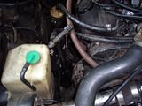

-
(Figured I would throw this in, lol.)
So you want to convert your car over to manual steering like a real man? Well you've come to the right place. This guide covers everything in the power steering removal, pump, rack, lines, everything. So let's get started.
Parts you will NEED:
A can of grease. I used red High Temp grease
New Rack boots, if they are bad. (Recommended anyways)
Possibly new Tie Rod ends
Blue Loc-tite
Tools you will NEED:
Basic tools you should have anyways.
(Metric wrenches and sockets from 8mm to 21mm)
Flathead Screwdrivers or punch set
A bench with a vise (You MIGHT be able to with out it, but it will be a LOT harder)
Hammers, (A rubber or dead blow would also be good)
Assortment of pliers, cutters, needle nose
Hacksaw or cutting wheel
A large Pipe wrench or Channel Locks, 3-4" jaws
Drain Pan
Ruler, Whiteout, etc.
Lots of old Rags
Recommended:
Z31 FSM for your year model
A Chisel set
Vice Grips
Degreaser
Tie rod removal tool, Available for rent at Autozone
Common sense
Power Steering Rack: Removal
#1 First, you need to get your car up on jack stands and take the front wheels off. If this makes you uncomfortable, then don't do this mod, lol.

#2 Go ahead and crack a couple of your lines loose to get the fluid draining. Take the cap off the P/S reservoir to speed things up.


(Choose your path, a or b…but choose wisely, lol)
#3a. You can remove the outer tie rod ends from the hub assemblies using either a hammer, turning the nut upside down and screwing it back on a bit, and some extreme caution, or a tie rod removal tool you can rent or buy at any Auto parts place, which is REALLY HIGHLY RECOMMENDED.


#3b. Push the rack boots back a little bit to reveal the flat spots that a 13mm or 14mm wrench will fit on. First, measure the length of threads from the nut up, or count them. You will need to be able to drive your car to an alignment shop! Loosen the locknut on the outer first, (21mm I think, or channel locks), then unscrew the inner tie rod all the way out. It will take a while, and the Jeopardy song might start playing in your head. Also make sure your steering wheel isn't locked.

This one pissed me off, lol.
#4. Now that both outer tie rods are not holding us back, go ahead and take the 10mm or 12mm bolt out of steering shaft so you can pull it away from the spindle on the rack. It is a good idea to mark this with something first, but I am getting an alignment after this, so I didn't care.

#5 Unscrew any lines still attaching the rack to the car, 2 of them I think.
#6 Take the 4 14mm bolts holding the brackets for the rack, noting how the left bracket is positioned. It has a hump in it that needs to point forward. Make sure it goes back that way.
#7 Now you are ready to yank that sucker out. Pull it out on the driver's side, not even sure if it's possible to do it the other way. You will have to shift and manuever it, at some point make it upside down. You will likely get fluid all over, have fun!
#8 We can see our victim clearly now, clean it up with degreaser and rags, the cleaner it is now, the easier everything on the bench will be. You may also point it at your drain pan and move the rack, getting as much fluid out as you can.
Power steering rack: Disassembly
#8 First go ahead and remove any other lines on the rack and both boots.
#9 Take out the Torx or 1/2" box screw and the outer ring. Remove the spring and half-pipe looking piece.

#9.5 Go ahead and remove the inner tie rod ends BEFORE taking the worm gear out. It's much easier this way.
This is for reference of the sizes of the nuts and whatnot.
#10 Take the large outer nut loose from the worm gear housing, and then using a flathead/punch and hammer, spin the piece out.

Lol, it still had fluid in it, this is why I recommended getting it all out earlier, heh.
#11 Now we need to get those Inner tie rod ends off. I used an old paint stick between a pair of vise grips so as not to damage the steering rod. Use your own methods, mine worked great for me. On second thought, just remove the inner tie rod ends before taking the worm gear out, DOH!

#12 Sorry for the lack of pictures here, I kind of got carried away and didn't take a picture, lol. Using your nifty pipe wrench, remove the center tube from the rack. You can use your screwdriver/hammer combo to loosen the little ring piece, but mine came loose without doing that. When clamping the rack in the vice, make sure not to squeeze any delicate parts too hard!
This pic might help..

#13 Using whatever method you are comfortable with, get this ring off the steering rod. I used a hacksaw, cut it at a 45 degree angle in two places, then use a chisel and hammer to separate it until it broke into multiple pieces. Just don't beat the piss out of your rod! (LOLOL)
Here is pic I drew up that may help:


#14 Alright, so you took that tube off, that pesky high pressure seal is laying defeated upon your workbench, you're only halfway finished…Now you need to take this little spacer whatever thing out, and pull the rubber seal out the end of it. Why, you ask? Well, since we are about to fill this rack with heavy grease, we need it to be able to travel and lubricate all parts of the rack. It made sense to me.


#15 Clean it up! Lube it up! Now it's time to put this mess back together. Clean everything up as much as you can. Polish your rod, (last one I swear, lol), then liberally coat everything in grease, especially the areas where there are teeth.

#16 Reassemble in reverse order…nope, this isn't a Haynes manual, I'm here with you all the way, lol. Put that insert piece on the rod, and put it back into the worm gear housing…hell, look at the pictures…

The parts we left out. They don't get to play any more reindeer games.

#17 Install the worm gear piece. I put more grease in before I did, just to make sure.
#18 Go ahead and screwdriver/hammer it back together, not TOO tight though, check the tension and make sure it's in, but not binding tight.

#19 When I realized the only thing sealing this section from the dirt, crap, and dust of outside, I put more grease in, and got a another boot off of my old parts car. This boot is very important, it needs to be a good one.


#20 Now it's time to make caps for all those old power steering line we don't need anymore. I used a paid of good dikes, squeezed the line about an inch above the fitting, and it breaks right off when you bend it. then I folded it upon itself and put in the vise. It's not gotta leak…heh.
h131/starion76/Manual%20Steering/th_IMGP1312.jpg" alt="" />

#21 Shoot some more grease into here, I did at least. Put the halfpipe piece back in, the spring, and screw the torx piece in and the outer ring. Now, this thing basically adjusts how easily the rack can move your steering wheel, and how hard it is the move the rack in general. Having it loose or tight can both render good and bad things. Loose will let you really feel where the car wants to go, but can also make it easy for the wheel to get jerked out of your hand. Tight will just make it harder to turn in general, but make bumps and things less likely to avert the steering wheel. Find your happy medium. I adjusted mine until it became harder to turn by hand, but not impossible.


#22 Time to install those inner tie rod ends. The FSM recommends loc-tite on the threads for these, and so do I! When it has to do with whether or not I can steer my car, using loc-tite doesn't seem like a bad idea. After screwing them on, mash the little washer pieces flat to also keep them from backing out.


#23 Reinstall the boots. Clamp them, whatever. That tube going from one side to the other, well, it's IMPORTANT! If yours broke off like mine did, make something work. Otherwise you will be getting dirt and crud in your rack, and now that it is full of grease, it's more important that it stay clean inside.
on=view¤t=IMGP1325.jpg">
Mine looked like this…yeah, not gonna fly.

Power Steering Pump: Removal (And good riddance!)
Who likes parasitic loss?!? Not I.
#24 This really isn't all that hard honestly. You will need some 12mm and 14mm wrenches and sockets, and I think either a 19 or 21 for the high pressure line fitting. TAKE IT LOOSE FIRST! It's a lot easier that way. Also keep your drain pan handy, somehow there will still be just enough fluid in things to piss you off. Loosen the tensioner bolt holder just below the front of the pump, then loosen the tensioner itself until you can remove the belt. Take loose any other lines going to it, yank the pump out, chunk it on the ground and declare yourself the victor in the war against power steering. Take the power steering bracket loose. 3 bolts I believe.

Aahh, Much better!

#25 Remove the four 10mm bolts holding the reservoir in place. Chunk on ground next to pump.

#26 Once again, a lack of pictures, but this is pretty simple. Those pesky lines are held in place by two 10mm bolts just in front of the engine cross member. Easy pie. Take out bolts, yank out lines, cut off ends to make the last two plugs for your rack. You may have to use a hacksaw or tubing cutter for these, they are quite strong.

Manual Steering Rack: Installation!
Hmm, something missing here!
There it is! Where were you hiding you naughty rack!

#27 I ziptied that all important line running from both boots, just because I think you should. Maneuver your awesome rack into place, (that means you, ladies), and set it in the mount.

#28 Now, I found this out the hard way, but go ahead and re-attach the steering shaft to the rack BEFORE bolting any of the steering rack brackets down. It is VERY IMPORTANT that you push the rod far enough up onto the spline so your bolt will fit where it needs to. Losing your steering is not a happy thought. If you have problems getting it back on, a fat screwdriver or chisel will work to stretch it open and make it go on easier.
#29 Put the rubber mounts in their proper places, the driver's side mount fits into that hump I mentioned earlier. Make sure that all fits properly because it controls how the rack is oriented. Tighten the 4 14mm bolts and double check everything.
#30 Screw the tie rod ends back on or put your outer tie rods back in. Either way, you're done. Pat yourself on the back, drink some beer, and get an alignment the next day, lol.
I hope this guide is helpful to you guys, it took a while to make. Good luck on your battle against parasitic loss, and your new workout plan, driving in parking lots!
LaterZ.1986 300ZX, Got the 85 Turbo Engine, Satan's Exhaust manifold, GT35R, Tial 44mm WG, Tial 50mm BOV, Nistune, 460cc Injectors, Treadstone Intercooler, NGK Wideband, Greddy Profec B Spec II EBC, 16 PSI and rising, heehee.
1993 300ZX Convertible, Pearl White, Bone Stock summer car.
1985 300ZX Turbo Wrecked (Parts car) : ( In her old days
1984 Mitsubishi Starion \
1987 Dodge Conquest - None of them run, LOL
1988 Mitsubishi Starion / -
I just did this to my rack, and it wasn't too hard. Just getting it all bolted up now and as soon as I get my rebuilt engine in I'll post up how it feels!
http://www.utahzclub.com
Do you type by throwing chopsticks at a keyboard that is spinning or something?
Troll, troll, troll your post, Gently down the feed. Merrily, merrily troll along, A life is what you need! -
I'll be doing this to my 86 Slicktop. Looking to begin next week.
1985 Nissan 300ZX 2+2- My first Z, back in the family
1987 Nissan 300ZX Turbo RIP 4/87 - 4/28/2011
Under Construction: 1986 Nissan 300ZX NA2T Slicktop
Originally posted by Tempestas -
Done! PurePontiacKid and I undertook the task and rolled through it pretty fast Can't wait to install it!
Can't wait to install it!
1985 Nissan 300ZX 2+2- My first Z, back in the family
1987 Nissan 300ZX Turbo RIP 4/87 - 4/28/2011
Under Construction: 1986 Nissan 300ZX NA2T Slicktop
Originally posted by Tempestas -
Performed this on my 86T recently. Waiting on motor to be put back in to test it.
I set the preload on the rack at the preload it was from the factory. I just simply put a mark on the 1/2" box screw, lock nut, and case before disassembly and upon reassembled put the marks back together. This way I can see how much a difference it makes input effort wise from PS to non-PS. This way I can also verify if I need to tighten or reduce the preload from stock values to get it where I like it.
1986 300ZX Turbo…sold
1990 Skyline GT-R…new money pit
2014 Juke Nismo RS 6-speed…daily -
Hey, I have an idea that may benefit the steering rack over the course of it's life after doing this mod.
Would installing a zerk fitting or two in strategic locations be a good idea to pump grease into the rack housing occasionally?
shouldn't be too difficult. maybe even find one that has the same thread as the vacuum tube lines and put them there? (those are removed, right?) -
Going to be doing this soon on the 84', does anyone have any feedback on how it actually feels afterwards compaired to not doing the modifications?
Seen many say they've done it, or are going to do it, but no feedback, or personal experiences while doing the mod. I will do it anyways, but always love reading others stories.


-
I did it but didn't drive the car.I did however set it on the ground and I thought it was very easy to turn even with two half flat tires.this method HAS to be much easier to turn than just removing the pump and capping the lines."If your car cant do a burnout from a 60mph rolling start, then your engine needs more work."
"Nitrous doesn't blow up motors; Idiots with nitrous blow up motors."
Shooting for 500whp

-
Its much easier to turn then just cutting the belt and pulling the pump, however because we still retain the 3ish to 1 ratio rack its still not super easy when at parking lot speeds, but its very usable. Its no where near as easy as the powered rack, but Ive found it to work very well. -
I know it has been a while so can anyone come back and testify to this mod?87 300zx turbo ~600whp
Built motor, ported heads, stage 2 cams, oversized valves, gutted maxima plenum, etc, etc, etc..... -
Mine is installed and ready to go. Still awaiting rear suspension and drivetrain.
Soon....
1985 Nissan 300ZX 2+2- My first Z, back in the family
1987 Nissan 300ZX Turbo RIP 4/87 - 4/28/2011
Under Construction: 1986 Nissan 300ZX NA2T Slicktop
Originally posted by Tempestas -
My 88 has this done. Its a bit rough at a stop, but nothing unbearable (I'm about 145 lbs, stock 225s up front). Around town I barely notice it after a few blocks. Steering is heavy, but not nearly as bad as my old 85 with a blown out PS pump. I can feel minor imperfections in the road quite well (rocks, cracks, etc). Its worth noting that my rack bushings are shot so the first 1/4 turn is all but useless at a stop.
For reference, my DD is an 85 with functional PS.5.3 LSx Z31 -
I have put about 1500 miles on this setup. I run 265/35R18 tires up front. It is hard at doing parking lot manuevers, which it doesn't see alot of anyways. On the road it's fine, just an extra little heft to the steering wheel. When I got to push it some at Road Atlanta, the steering wheel felt just awesome. Just a little more heft than regular driving, but that also makes your steering inputs more deliberate and precise and you can actually "feel" what the front tires are doing as everything is now mechanically linked instead of a hydrualic system which tends to dampen feedback from the front wheels. Also noticed the steering wheel will self center way quicker than the stock system ever could, which is great for counteracting oversteer or negotiating a quick series of tight turns.
I don't think my setup would be ideal for Auto-x because of the wide front tires I run cause more steering effort at slower speeds.
1986 300ZX Turbo…sold
1990 Skyline GT-R…new money pit
2014 Juke Nismo RS 6-speed…daily -
I'm running 215's up front on z33 wheels at the moment, and it's much more controllable, steering inputs are much more deliberate, and respond that way. Stationary is annoying, but move 2 inches, and it's plenty easy to turn the wheel… Worst case, use 2 hands!
Slow speeds and constant turning will give you a bit of a tricep workout, but I am absolutely glad I did this!
Thank you very much for the write up!
--- anyone interested in the rack gutting, but don't have time/skill/ or a place to do it, contact me, as I am open to doing the mod for others!Damn dirty angels....these cars!
Current Daily Driver - 86 Turbo.
Under the cover - THE BANANA… that needs to be re-energized.
sigpic -
Maybe I'm missing something, but I'm lost once I hit step #14. Not sure which seal and spacer thing that it is referring to. Also, how do you get the center tube off? By center tube I mean the large rack casing tube that attaches to the cast iron pinion housing.Shiro #93
Mods: A/C Removal, Custom Lightweight W-series crank pulley, K&N Air Filter, Electric Fan, EGR/AIV/CC removal

Copyright © 2006–. All rights reserved. Privacy Policy